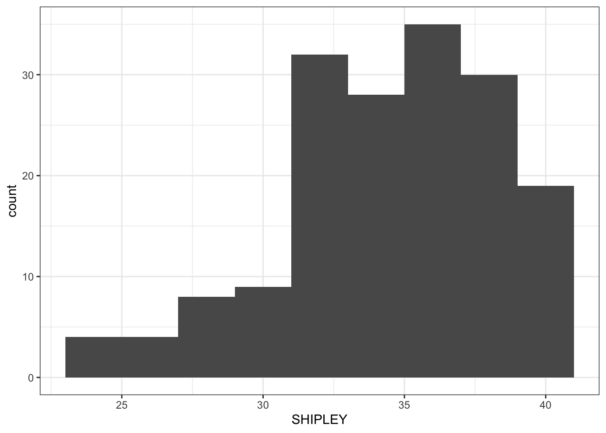
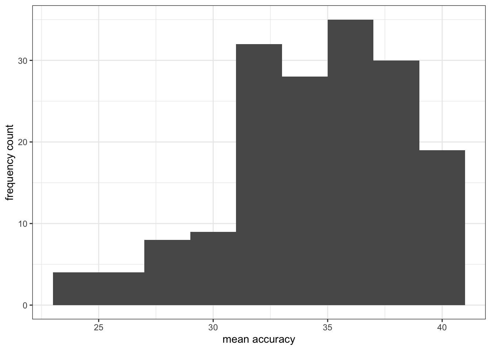
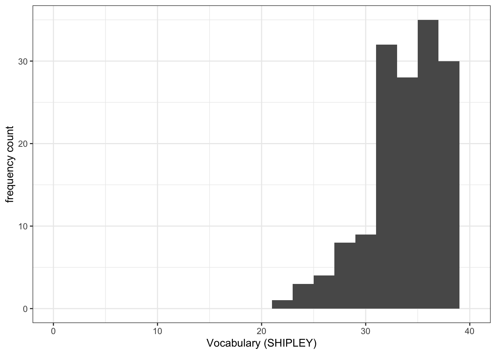
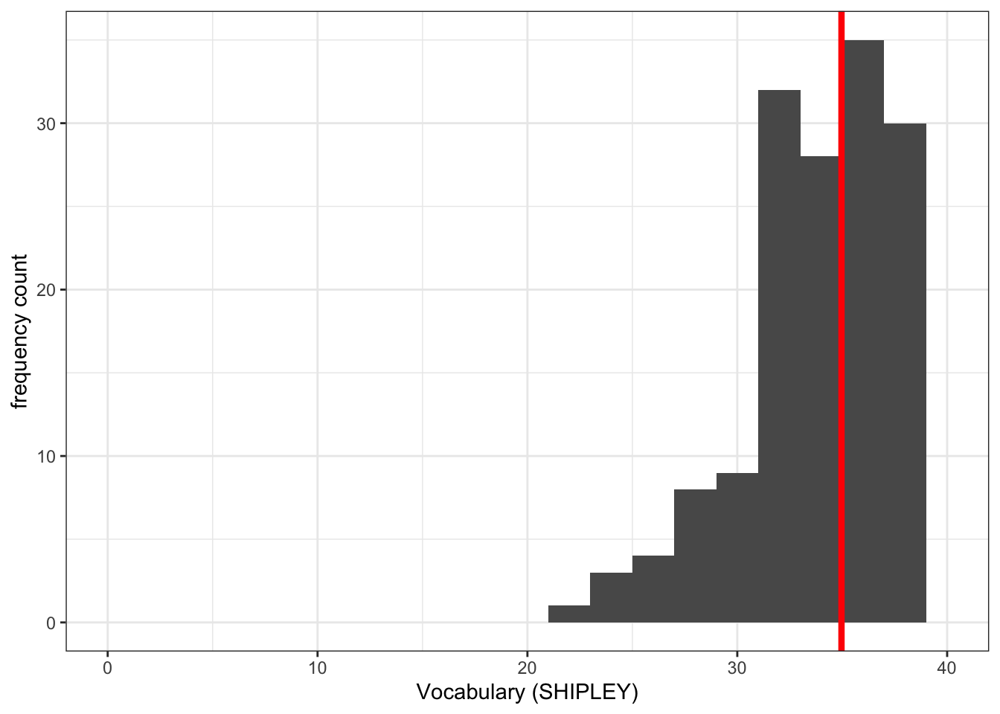
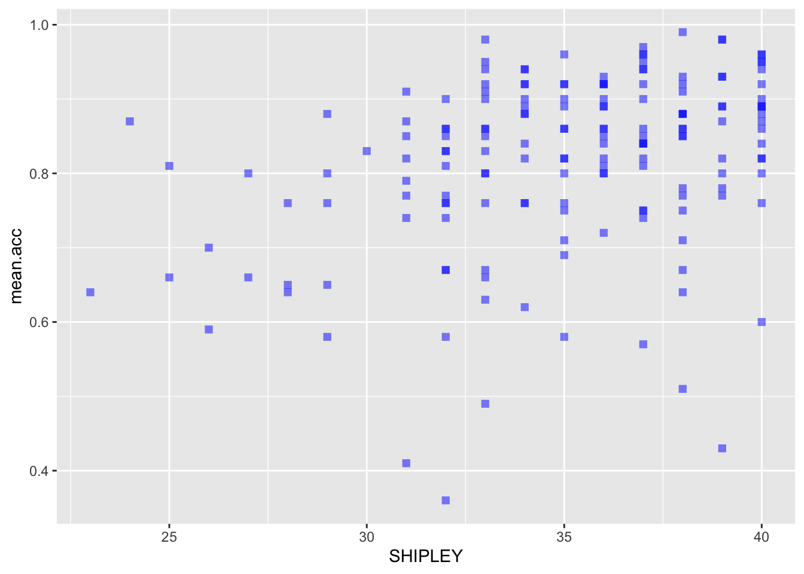
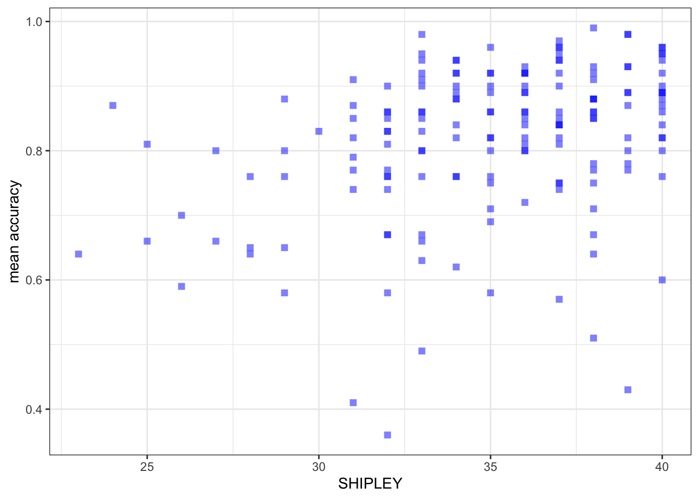
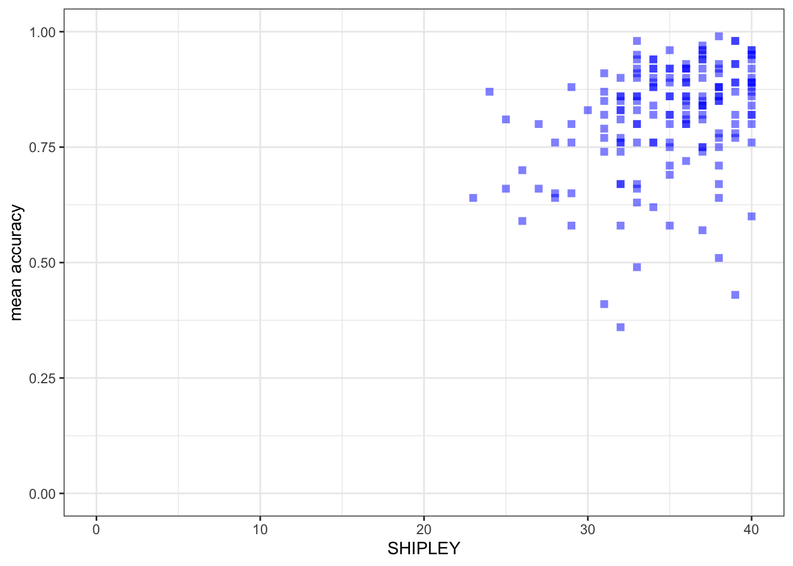
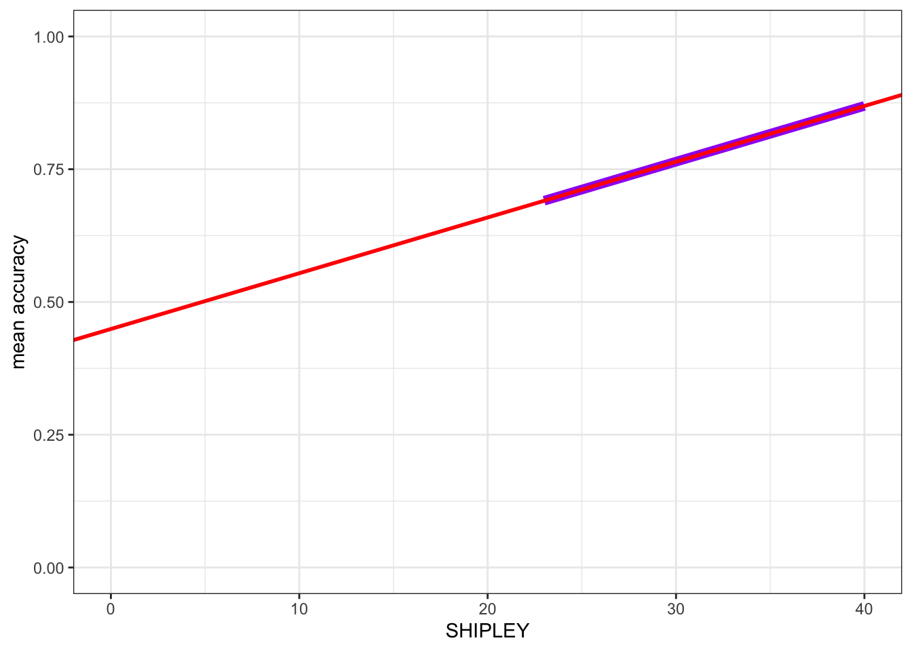

rm(list=ls()) 2023-24-PSYC122-w17-how-to
Introduction
In Week 17, we aim to further develop skills in visualizing and testing the associations between variables in psychological data.
We do this to learn how to answer research questions like:
- What person attributes predict success in understanding?
- Can people accurately evaluate whether they correctly understand written health information?
These kinds of research questions can be answered using methods like the linear model.
When we do these analyses, we need to think about how we report the results:
- we usually need to report information about the kind of model we specify;
- and we will need to report the nature of the association estimated in our model;
- we usually need to decide, is the association significant?
- does the association reflect a positive or negative relationship between outcome and predictor?
- and is the association we see in our sample data relatively strong or weak?
We will consolidate and extend learning on data visualization:
- focusing on how we edit ggplot() code to produce professional looking plots.
Naming things
I will format dataset names like this:
study-one-general-participants.csv
I will also format variable (data column) names like this: variable
I will also format value or other data object (e.g. cell value) names like this: studyone
I will format functions and library names like this: e.g. function ggplot() or e.g. library {tidyverse}.
The data we will be using
In this activity, we use data from a 2020 study of the response of adults from a UK national sample to written health information:
study-one-general-participants.csv
Step 1: Set-up
To begin, we set up our environment in R.
Task 1 – Run code to empty the R environment
Task 2 – Run code to load relevant libraries
library("tidyverse")── Attaching packages ─────────────────────────────────────── tidyverse 1.3.2 ──
✔ ggplot2 3.4.4 ✔ purrr 1.0.2
✔ tibble 3.2.1 ✔ dplyr 1.1.2
✔ tidyr 1.3.0 ✔ stringr 1.5.0
✔ readr 2.1.3 ✔ forcats 0.5.2
── Conflicts ────────────────────────────────────────── tidyverse_conflicts() ──
✖ dplyr::filter() masks stats::filter()
✖ dplyr::lag() masks stats::lag()Step 2: Load the data
Task 3 – Read in the data file we will be using
The data file is called:
study-one-general-participants.csv
Use the read_csv() function to read the data file into R:
study.one.gen <- read_csv("study-one-general-participants.csv") Rows: 169 Columns: 12
── Column specification ────────────────────────────────────────────────────────
Delimiter: ","
chr (5): participant_ID, study, GENDER, EDUCATION, ETHNICITY
dbl (7): mean.acc, mean.self, AGE, SHIPLEY, HLVA, FACTOR3, QRITOTAL
ℹ Use `spec()` to retrieve the full column specification for this data.
ℹ Specify the column types or set `show_col_types = FALSE` to quiet this message.When you read the data file in, give the data object you create a distinct name e.g. study.one.gen.
Task 4 – Inspect the data file
Use the summary() or head() functions to take a look.
head(study.one.gen)# A tibble: 6 × 12
participant_ID mean.acc mean.self study AGE SHIPLEY HLVA FACTOR3 QRITOTAL
<chr> <dbl> <dbl> <chr> <dbl> <dbl> <dbl> <dbl> <dbl>
1 studyone.1 0.49 7.96 studyo… 34 33 7 53 11
2 studyone.10 0.85 7.28 studyo… 25 33 7 60 11
3 studyone.100 0.82 7.36 studyo… 43 40 8 46 12
4 studyone.101 0.94 7.88 studyo… 46 33 11 51 15
5 studyone.102 0.58 6.96 studyo… 18 32 3 51 12
6 studyone.103 0.84 7.88 studyo… 19 37 13 45 19
# ℹ 3 more variables: GENDER <chr>, EDUCATION <chr>, ETHNICITY <chr>summary(study.one.gen) participant_ID mean.acc mean.self study
Length:169 Min. :0.3600 Min. :3.440 Length:169
Class :character 1st Qu.:0.7600 1st Qu.:6.080 Class :character
Mode :character Median :0.8400 Median :7.080 Mode :character
Mean :0.8163 Mean :6.906
3rd Qu.:0.9000 3rd Qu.:7.920
Max. :0.9900 Max. :9.000
AGE SHIPLEY HLVA FACTOR3
Min. :18.00 Min. :23.00 Min. : 3.000 Min. :34.00
1st Qu.:24.00 1st Qu.:33.00 1st Qu.: 7.000 1st Qu.:46.00
Median :32.00 Median :35.00 Median : 9.000 Median :51.00
Mean :34.87 Mean :34.96 Mean : 8.905 Mean :50.33
3rd Qu.:42.00 3rd Qu.:38.00 3rd Qu.:10.000 3rd Qu.:55.00
Max. :76.00 Max. :40.00 Max. :14.000 Max. :63.00
QRITOTAL GENDER EDUCATION ETHNICITY
Min. : 6.00 Length:169 Length:169 Length:169
1st Qu.:12.00 Class :character Class :character Class :character
Median :13.00 Mode :character Mode :character Mode :character
Mean :13.36
3rd Qu.:15.00
Max. :19.00 Notice that:
head()will give you the top few rows of any dataset you have read into R.summary()will give you either descriptive statistics for variable columns classified as numeric or will tell you that columns in the dataset are not numeric.
Pay attention to what you see, for the numeric variables, in the information about minimum (Min.) and maximum (Max.) values. You will use this informatio later when you engage in data visualization.
Step 3: Use histograms to examine the distributions of variables
Revise: practice to strengthen skills
Task 5 – Draw histograms to examine the distributions of variables
hint: Task 5
Use ggplot() with geom_histogram().
When we create a plot, we take things step-by-step.
Here’s an example you have seen before: run the lines of code and see the result in the Plots window in R-Studio.
ggplot(data = study.one.gen, aes(x = mean.acc)) +
geom_histogram()`stat_bin()` using `bins = 30`. Pick better value with `binwidth`.
These are the steps, set out one at a time:
ggplot(...)you tell R you want to make a plot using theggplot()functionggplot(data = study.one.gen ...)you tell R you want to make a plot with thestudy.two.gendataggplot(..., aes(x = mean.acc))you tell R that you want to make a plot with the variablemean.acc– here, you specify the aesthetic mapping,x = mean.accggplot(...) + geom_histogram()you tell R you want to plot values ofmean.accas a histogram
Notice that the code works the same whether we have the different bits of code on the same line or in a series of lines.
Revise: make sure you are confident about doing these things
Task 6 – Practice editing the appearance of a histogram plot step-by-step
We are going to revise editing:
- The appearance of the bars using
binwidth; - The colour of the background using
theme_bw(); - The appearance of the labels using
labs().
We proceed to revise:
Task 6.1 – the appearance of the bars using binwidth:
ggplot(data = study.one.gen, aes(x = SHIPLEY)) +
geom_histogram(binwidth = 2)
Task 6.2 – then the colour of the background using theme_bw():
ggplot(data = study.one.gen, aes(x = SHIPLEY)) +
geom_histogram(binwidth = 2) +
theme_bw()
Task 6.3 – then the appearance of the labels using labs():
ggplot(data = study.one.gen, aes(x = SHIPLEY)) +
geom_histogram(binwidth = 2) +
theme_bw() +
labs(x = "mean accuracy", y = "frequency count")
Introduce: make some new moves
Task 6.4. Now add an edit by setting the x-axis limits using x.lim():
ggplot(data = study.one.gen, aes(x = SHIPLEY)) +
geom_histogram(binwidth = 2) +
theme_bw() +
labs(x = "Vocabulary (SHIPLEY)", y = "frequency count") +
xlim(0,40)Warning: Removed 2 rows containing missing values (`geom_bar()`).
Task 6.5. Now add a vertical line to show the mean value:
ggplot(data = study.one.gen, aes(x = SHIPLEY)) +
geom_histogram(binwidth = 2) +
theme_bw() +
labs(x = "Vocabulary (SHIPLEY)", y = "frequency count") +
xlim(0,40) +
geom_vline(xintercept = mean(study.one.gen$SHIPLEY), colour = "red", size = 1.5)Warning: Using `size` aesthetic for lines was deprecated in ggplot2 3.4.0.
ℹ Please use `linewidth` instead.Warning: Removed 2 rows containing missing values (`geom_bar()`).
Why are we learning how to do this?
It is often useful to define the limits on the x-axis and on the y-axis:
- Because we want to show the audience where the sample values are distributed compared to where they could be distributed, given the measure.
- This makes sense e.g. if you want to see the relative age distribution of a sample compared to the population.
- Because we want plots, shown side by side to be directly comparable.
- And because we want to give the audience a more accurate picture of the data.
You can see ggplot reference information on setting limits here:
https://ggplot2.tidyverse.org/reference/lims.html
Notice that we used the geom_vline() in:
geom_vline(xintercept = mean(study.one.gen$SHIPLEY), colour = "red", size = 1.5)- to plot a vertical line at the location on the x-axis we define.
We do this in the steps:
geom_vline(...)draw a vertical line;...xintercept...draw the line so it hits the x-axis (intercepts the x-axis);...xintercept = mean(study.one.gen$SHIPLEY...defined by the mean of the variablemean(study.one.gen$SHIPLEY);...colour = "red", size = 1.5...make the line red and make the line one and a half times thicker than the default line thickness.
See ggplot() reference information for this new geom is here:
Step 4: Now draw scatterplots to examine associations between variables
Consolidation: should be no surprises here
Task 7 – Create a scatterplot to examine the association between some variables
hint: Task 7 – We are working with geom_point() and you need x and y aesthetic mappings.
hint: Task 7 – The outcome variable mean.acc has to be mapped to the y-axis using ...y = ...
Run a chunk of code to make the plot.
ggplot(data = study.one.gen, aes(x = SHIPLEY, y = mean.acc)) +
geom_point()
This plot shows:
- the possible association between x-axis variable
SHIPLEYand y-axis variablemean.acc.
The plot code moves through the following steps:
ggplot(...)make a plot;ggplot(data = study.one.gen, ...)with thestudy.one.gendataset;ggplot(...aes(x = SHIPLEY, y = mean.acc))using two aesthetic mappings
x = SHIPLEYmapSHIPLEYvalues to x-axis (horizontal, left to right) positions;y = mean.accmapmean.accvalues to y-axis (vertical, bottom to top) positions;
geom_point()show the mappings as points.
Revise: make sure you are confident about doing these things
Task 8 – Edit the appearance of each plot step-by-step
We are going to revise making edits to:
- the appearance of the points using
alpha,size,shape, andcolour; - the colour of the background using
theme_bw(); - the appearance of the labels using
labs().
We are then going to try out some new moves:
- Set the x-axis and y-axis limits to the potential minimum-maximum ranges of the variables we plot.
Here, “potential” references the fact that e.g. SHIPLEY scores can start at 0 (a person gets 0 responses correct) and has a maximum of 40 (a person could get all responses correct, for up to 40 items).
Task 8.1. Edit the appearance of the points using alpha, size, shape, and colour:
ggplot(data = study.one.gen, aes(x = SHIPLEY, y = mean.acc)) +
geom_point(alpha = 0.5, size = 2, colour = "blue", shape = "square") 
Task 8.2. Edit the colour of the background using theme_bw():
ggplot(data = study.one.gen, aes(x = SHIPLEY, y = mean.acc)) +
geom_point(alpha = 0.5, size = 2, colour = "blue", shape = "square") +
theme_bw()
Task 8.3. Edit the appearance of the labels using labs():
ggplot(data = study.one.gen, aes(x = SHIPLEY, y = mean.acc)) +
geom_point(alpha = 0.5, size = 2, colour = "blue", shape = "square") +
theme_bw() +
labs(x = "SHIPLEY", y = "mean accuracy")
Introduce: make some new moves
Task 8.4. Set the axis limits:
ggplot(data = study.one.gen, aes(x = SHIPLEY, y = mean.acc)) +
geom_point(alpha = 0.5, size = 2, colour = "blue", shape = "square") +
theme_bw() +
labs(x = "SHIPLEY", y = "mean accuracy") +
xlim(0, 40) + ylim(0, 1)
Notice that I set the x-axis limits to the minimum (0) and maximum (40) possible values for the SHIPLEY variable. - I set the y-axis limits to the minimum (0) and maximum (1) possible values for the mean accuracy variable mean.acc.
Why are we learning how to do this?
It is generally a good idea to show the minimum value (the origin) for each variable. Not doing this i.e. showing a more narrow slice of the sample range is an easy way to exaggerate the strength of associations or to imply incorrectly the breadth in variation.
You can change the transparency (alpha), size, colour and shape of important parts of a plot.
- Here, we are changing the appearance of the points.
- But you can also change the transparency (alpha), size, colour and shape of reference lines added to a plot.
The ggplot geom_point()reference information is here:
https://ggplot2.tidyverse.org/reference/geom_point.html
- where you can see some examples of the edits we have done.
Some useful information about shape options is here:
http://www.cookbook-r.com/Graphs/Shapes_and_line_types/
Some useful information about colourons is here:
Now experiment!
Step 5: Use a linear model to to answer the research questions
Introduce: Make some new moves
One of our research questions is:
- What person attributes predict success in understanding?
Task 9 – Examine the relation between outcome mean accuracy (mean.acc) and the predictor variable: vocabulary (SHIPLEY)
hint: Task 9 – We use lm()
Fit the model and get a summary of the model statistics.
model <- lm(mean.acc ~ SHIPLEY, data = study.one.gen)
summary(model)
Call:
lm(formula = mean.acc ~ SHIPLEY, data = study.one.gen)
Residuals:
Min 1Q Median 3Q Max
-0.42871 -0.04921 0.02079 0.07480 0.18430
Coefficients:
Estimate Std. Error t value Pr(>|t|)
(Intercept) 0.44914 0.08053 5.577 9.67e-08 ***
SHIPLEY 0.01050 0.00229 4.585 8.85e-06 ***
---
Signif. codes: 0 '***' 0.001 '**' 0.01 '*' 0.05 '.' 0.1 ' ' 1
Residual standard error: 0.1115 on 167 degrees of freedom
Multiple R-squared: 0.1118, Adjusted R-squared: 0.1065
F-statistic: 21.03 on 1 and 167 DF, p-value: 8.846e-06Notice that we do the linear model in the steps:
model <- lm(...)fit the model usinglm(...), give the model a name – here, we call it “model”;...lm(mean.acc ~ SHIPLEY...)tell R you want a model of the outcomemean.accpredicted (~) by the predictorSHIPLEY;...data = study.one.gen)tell R that the variables you name in the formula live in thestudy.one.gendataset;summary(model)ask R for a summary of the model you called “model”.
Notice: R has a general formula syntax: outcome ~ predictor or y ~ x
- and uses the same format across a number of different functions;
- each time, the left of the tilde symbol
~is some output or outcome; - and the right of the tilde
~is some input or predictor or set of predictors.
Questions: Task 9
If you look at the model summary you can answer the following questions.
Q.5. What is the estimate for the coefficient of the effect of the predictor,
SHIPLEY?A.5. 0.01050
Q.6. Is the effect significant?
A.6. It is significant, p < .05
Q.7. What are the values for t and p for the significance test for the coefficient?
A.7. t = 4.585, p = 8.85e-06
Q.8. What do you conclude is the answer to the research question, given the linear model results?
A.8. The model slope estimate suggests that as
SHIPLEYscores increase somean.accscores increase also.
Step 6: Use a linear model to generate predictions
Introduce: make some new moves
Task 10 – We can use the model we have just fitted to plot the model predictions
hint: Task 10 – We are going to draw a scatterplot and add a line
The line will show the model predictions, given the model intercept and effect coefficient estimates.
First fit a model and get a summary: model the relationship between mean.acc and SHIPLEY
model <- lm(mean.acc ~ SHIPLEY, data = study.one.gen)
summary(model)
Call:
lm(formula = mean.acc ~ SHIPLEY, data = study.one.gen)
Residuals:
Min 1Q Median 3Q Max
-0.42871 -0.04921 0.02079 0.07480 0.18430
Coefficients:
Estimate Std. Error t value Pr(>|t|)
(Intercept) 0.44914 0.08053 5.577 9.67e-08 ***
SHIPLEY 0.01050 0.00229 4.585 8.85e-06 ***
---
Signif. codes: 0 '***' 0.001 '**' 0.01 '*' 0.05 '.' 0.1 ' ' 1
Residual standard error: 0.1115 on 167 degrees of freedom
Multiple R-squared: 0.1118, Adjusted R-squared: 0.1065
F-statistic: 21.03 on 1 and 167 DF, p-value: 8.846e-06Q.9. What is the coefficient estimate for the intercept?
A.9. 0.44914
Q.10. What is the coefficient estimate for the slope of
SHIPLEY?A.10. 0.01050
Second, use the geom_abline() function to draw the line:
ggplot(data = study.one.gen, aes(x = SHIPLEY, y = mean.acc)) +
geom_point(alpha = 0.5, size = 2, colour = "blue", shape = "square") +
geom_abline(intercept = 0.44914, slope = 0.01050, colour = "red", size = 1.5) +
theme_bw() +
labs(x = "SHIPLEY", y = "mean accuracy") +
xlim(0, 40) + ylim(0, 1)
You can see that what we do is:
- add the
geom_abline(...)function; - and into that function code, we add information about the intercept and the slope which we take from the model summary.
You can see reference information here:
https://ggplot2.tidyverse.org/reference/geom_abline.html
Note that we can get the prediction line drawn for us automatically, as:
ggplot(data = study.one.gen, aes(x = SHIPLEY, y = mean.acc)) +
# geom_point(alpha = 0.5, size = 2, colour = "blue", shape = `square`) +
geom_smooth(method = "lm", colour = "purple", alpha = .2, size = 2.5, se = FALSE) +
geom_abline(intercept = 0.44914, slope = 0.01050, colour = "red", size = 1) +
theme_bw() +
labs(x = "SHIPLEY", y = "mean accuracy") +
xlim(0, 40) + ylim(0, 1) `geom_smooth()` using formula = 'y ~ x'
- Here, I turned the points off by commenting them out, adding # to the start of the line.
- And I added
geom_smooth(method = "lm", ...)to draw a prediction line. - You can compare the red prediction line I drew using the model estimates
- with the purple line I used geom_smooth() to draw automatically to see that they are identical
This shows you something of what geom_smooth() does. It is very useful: